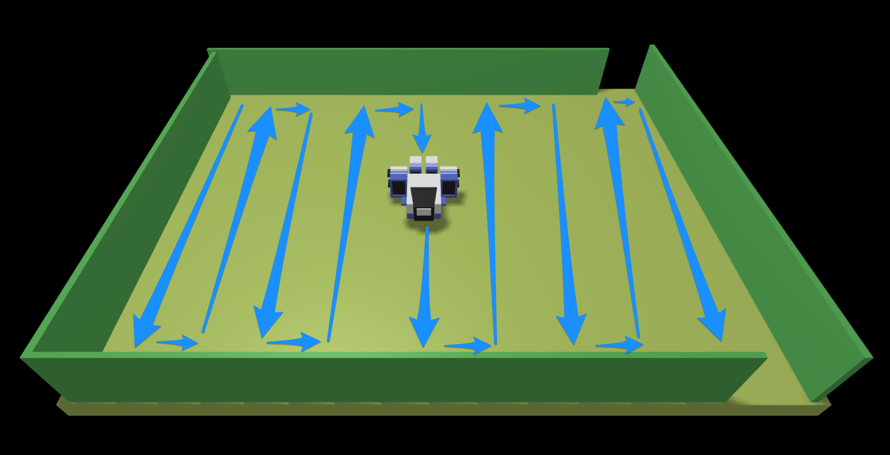

LABORATORIO DI INGEGNERIA DEI SISTEMI SOFTWARE
Introduction
Requirements
Requirement analysis
User Story
Come utente, posizione il robot nella cella HOME (rivolto a sud) e attivo un sistema che invia
al robot (via rete wifi) comandi di movimento. Come utente non posso interrompere l'esecuzione,
il sistema deve terminare in modo autonomo una volta eseguito il compito.
Al termine dell'esecuzione del sistema, mi aspetto che il robot abbia effettuato un percorso simile a quello
riportato nella figura, comprendo l'intera superficie della stanza.

Verifica dei risultati
Problem analysis
Aspetti Rilevanti
-
Si tratta di realizzare un sistema distribuito composto da due macro componenti:
- Il robot virtuale, fornito dal committente.
- L'applicazione (robotCleaner) che invia comandi al robot in modo da soddisfare i
requisiti.
-
Il robot riceve comandi via rete in due modi diversi,
come descritto in VirtualRobot2021:
-
Inviando messaggi alla porta 8090 con protocollo HTTP POST.
-
Inviando messaggi alla porta 8091 usando una WebSocket
Abstraction Gap
Problematiche Individuate
-
Il sistema software dovrebbe essere il più possibile indipendente dal protocollo di comunicazione
usato per interagire con il WEnv. Il progettista potrebbe utilizzare il pattern Factory per rendere il livello applicativo
il più possibile invariante rispetto al protocollo di comunicazione, il quale potrebbe essere selezionato
in fase di configurazione del sistema.
-
Il problema consiste nel definire un controllore capace di realizzare una strategia di
comando sistematica, il robot non deve muoversi nella stanza in maniera casuale ma dovrebbe
seguire una precisa strategia di movimento.
-
La necessità di definire un TestPlan automatizzabile implica che l'applicazione debba essere
in qualche modo "osservabile", ovvero bisogna rendere gli effetti verificabili da parte di una macchina.
Un possibile modo di procedere è quello di inferire conoscenza dai comandi inviati e dalle
risposte ricevute dal WEnv, rappresentando in modo esplicito tale conoscenza.
Strategie di movimento
Sono possibili diverse strategie di movimento che permettono il soddisfacimento dei risultati e la verifica
della correttezza via software.
Movimento a spirale
Nel caso della figura a sinistra, il robot segue i bordi della stanza,
riducendo via via il lati della stanza di DR (dimensione robot). In questo modo il robot lavora
seguendo un moviemnto a spirale, in una 'stanza virtuale' di lati DWallDown - N*DR e
DWallLeft - N*DR, con N=1,2,..,M.
Completamento del lavoro: Quando la 'stanza virtuale' perde tutte le dimensioni il robot avrà
completato il lavoro.
Verifica dei risultati: Bisogna tenere traccia, in una mappa, delle posizioni coperte dal robot.
Movimento a colonne
Nel caso della figura centrale, il robot lavora 'per colonne'.
In particolare, procede lungo il muro wallLeft fino a incontrare wallDown.
Qui gira a sinistra, fa un passo laterale di lunghezza adeguaata, poi gira di nuovo a sinistra e procede
diritto verso il muro wallUp; quando lo incontra gira a destra fa un passo laterale,
rigira verso destra e di nuovo procede verso wallDown.
Completamento del lavoro: durante un passo laterale, il robot incontrerà di sicuro wallRight:
come ultima mossa procede lungo tale muro fino a che non incontra di nuovo un muro (wallUp o wallDown)
e qui si ferma, considerando terminato il lavoro.
Verifica dei risultati: consiste nel tenere traccia del numero di passi laterali compiuti lungo
il muro wallDown. Se ogni passo copre una distanza DR pari alla lunghezza del robot,
il numero totale dei passi da compiere è DWallDown/DR + 1.
Moviemento a quadrati incrementali
Nel caso della figura di destra, il robot procede coprendo aree quadrate di lato DR*N,
con N=1,2,..,M. Questa strategia risulta facile da realizzare per stanza quadrate o quasi, ma è
più complicata per stanza rettangolari con lati di lunghezza diversa tra loro.
Architettura Logica
Il sistema che bisogna realizzare può essere rappresentato dalla seguente architettura logica:
Test plans
Al fine di verificare che l'applicazione sviluppata soddisfi i requisiti, dovremmo tenere traccia delle mosse
effettuate dal robot, più precisamente bisogna tenere traccia delle posizioni, all'interno della stanza, coperte dal robot.
Per fare ciò supponiamo di suddividere la stanza in un reticolo in cui ogni cella ha la dimensione del robot,
e impostiamo il tempo delle mosse "moveForward" e "moveBackward" in modo da ottenere
spostamenti di unità-robot, come mostrato in figura:

Partendo dalla cella HOME ([0,0]) il robot si muove a spirale, come mostrato in figura, per coprire
l'intera superficie della stanza.
|o, x, x, x, o,
|x, x, x, x, x,
|x, x, x, x, x,
|x, x, x, x, x,
|o, x, x, x, o,
Project
Testing
Deployment
Maintenance
Autovalutazione
By Enrico Valastro email: enrico.valastro@studio.unibo.it